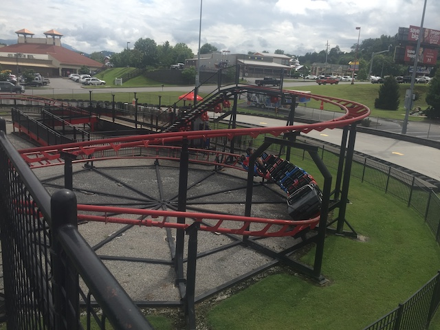
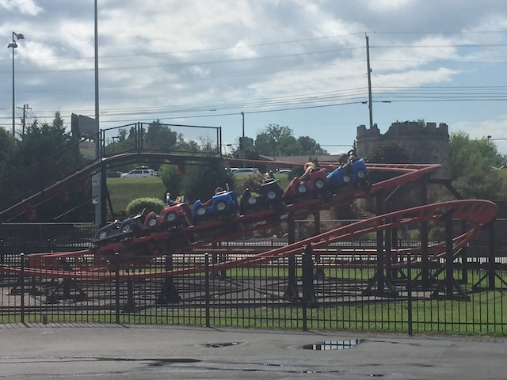
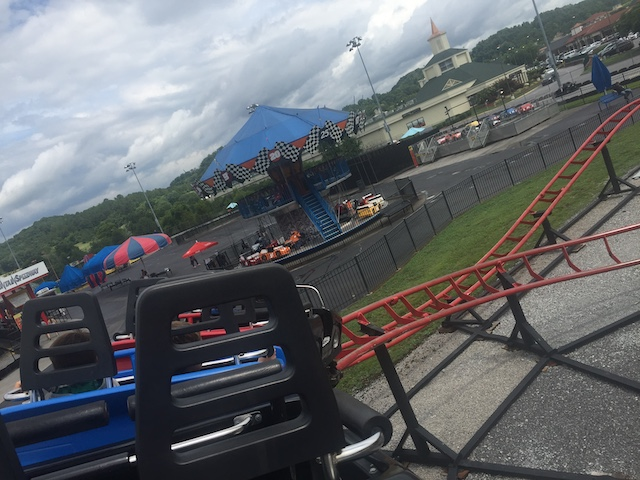
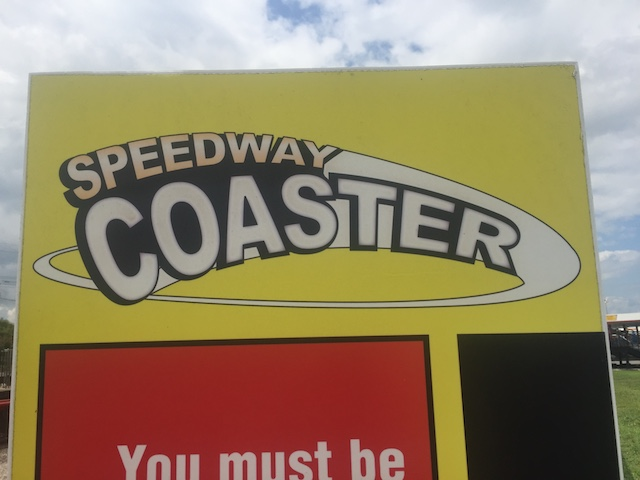

| |
Speedway Coaster Review

We're here at NASCAR Speedpark. Since you're on this site, I'm assuming you're a coaster enthusiast, which means that I'm assuming that you came to this place to credit whore. So, we're riding this thing. You climb into the cars, and pull down the lap bar. And we're off!!! We start to climb the lifthill. But before we know it, we are rolling through this downward helix that's acting as our first drop. You can easily tell that this coaster is not made for adults to ride. We then rise up a little bit and go through a little turn. We then go through some tiny bumps and through another turn before heading back in the station. Hey, it may be boring, but at least it's not a painful kiddy coasters. But even so, it's still just a tiny kiddy coaster. Cha-Ching! Hope it was worth the expensive all day pass (or that you're gonna do Go-Karts to get your moneys worth).
2/10
Location: NASCAR Speedpark
Opened: 2004
Built by: Zeirer
Last Ridden: July 23, 2019
I have ridden this exact same ride at the following parks.
Bon Bon Land
Heide Park
Speedway Coaster Photos



Home
|